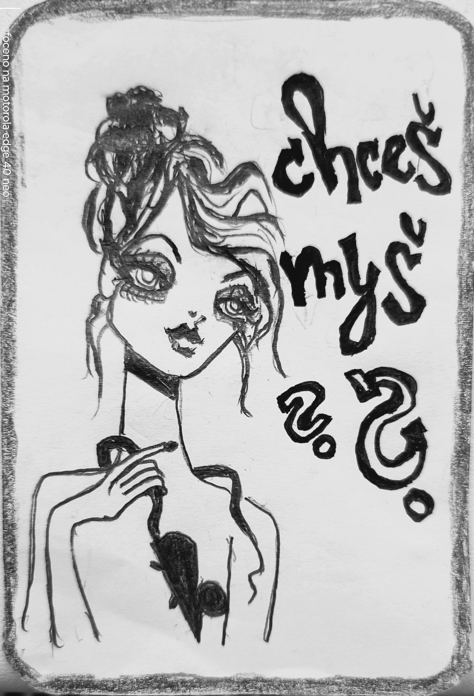

Zapsáno rukou, která nechtěla nic vysvětlit.
KŘIVÁ POHÁDKA – ROVNÉ SVĚDECTVÍ
—
Tyto pohádky nevyprávějí příběhy tak, jak by měly. Místo kouzel tu vládne nedorozumění. Místo dobra a zla – podivný klid mezi nimi. Zvířata tu mluví, ale ne proto, aby nás bavila. Říkají to, co lidé nemohou vyslovit. Příběhy, co se spíš staly, než vymyslely – a možná se pořád dějí. Jen je nelze vidět z běžného úhlu.
—
KŘIVÁ POHÁDKA
Tak malá, divná, křivá pohádka o myši, co možná ani není pohádka, ale něco, co se stalo. A v tom světě jsou i jiná zvířata – čáp, páv, kocour, kozel… ale všechno to je napůl sen, napůl vtip, napůl výklad a napůl úplně mimo.
—
O MYŠI
a o tom, co se stane, když si jí NEvšimneš
—
Kdysi – zároveň ne tak docela dávno. A ne úplně blízko, ale zase ani ne nijak moc daleko. Žila jedna myš. Byla malá, tak jak to u myší normálně bývá. A měla dvě veliké uši, což také není u myši žádná vzácnost.
—
Nebyla nijak zvlášť rychlá, ale ani úplně pomalá. Nebyla hloupá, ale ani kdovíjak chytrá. Na první pohled obyčejná, běžná myš.
—
Ale ne – normální. Všímala si věcí, které ostatní přehlíželi.
—
Například toho, že se ve vzduchu občas zadrhne věta. Nebo že páv, když se nikdo nedívá, přepočítává svá oka. Nebo že čáp, někdy jen tak přistane na komíně a zapomene, koho měl donést.
—
A tahle myš si začala věci zapisovat. Ne na papír. Ale tak nějak. Do ticha. Do koutů. Do skulin mezi slovama, kde to obvykle nikdo nečte.
—
A pak si jednoho dne všimla, že se kolem ní začínají hromadit zvířata. Ne v řadě. Ne v kruhu. Prostě… tak nějak.
—
A každé si neslo něco, co nevysvětlovalo. Zajíc měl popálené uši a voněl po kouři. Kocour se dusil smíchem, protože spolkl tečku. Slon si v chobotu nesl třešně, co nikdy nedozrají. A lemur se nedíval na nic, jen na stranu, kde nic nebylo.
—
Myš neříkala nic. Ale všechno si poznamenala. A pak se jednoho dne zeptala první větu. Ne velkou. Ne důležitou. Jenom tu jednu: „Chceš myš?“
—
A to nebyla otázka, co se ptá na ni samotnou. To byla otázka, co se ptá na všechno. Na smysl. Na jazyk. Na strach. Na to, co si z nás kdo udělá.
—
A taky na to, jestli si tuhle pohádku necháš vyprávět do konce. Nebo zapištíš a utečeš. Nebo si ji složíš jinak. Protože od té chvíle, už to nebyla jen myš. Byl to klíč. A pádlo. A past. A konec úvodu. Ale začátek něčeho dalšího. ..možná..